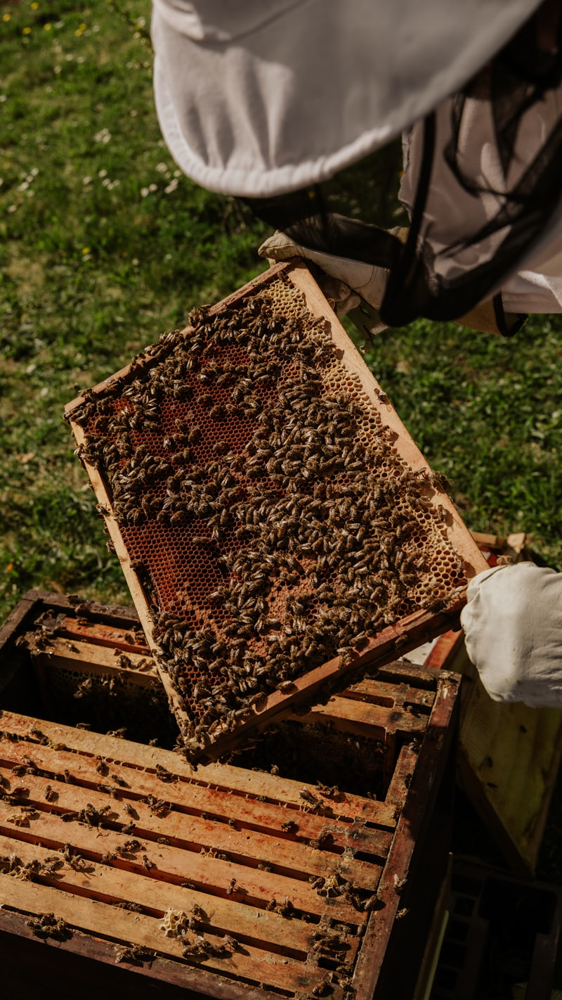

Youth and International Representation
Young people are stakeholders not only of the future, but of today.
Meeting beekeeping at an early age, understanding the links between nature, science, agriculture and sustainability, and gaining international experience all matter for the future of beekeeping.
The focus of our youth work
In its youth work, the Apiculture Foundation focuses on the following areas.
- 01Education
- 02Experience sharing
- 03Youth clubs
- 04National events
- 05International meetings
- 06Mentoring
- 07Volunteering
- 08Intercultural communication
We see youth development not as a single project, but as part of the Foundation’s broader responsibility to contribute to the development of future generations.
Supporting the international representation of young beekeepers from Türkiye.
The Foundation supports the connection of young beekeepers in Türkiye with the International Confederation of Young Beekeepers (ICYB) and supports Türkiye’s participation in the International Meeting of Young Beekeepers (IMYB) process.
ICYB
ICYB is an international network that fosters communication, experience sharing and cooperation among young beekeepers.
The Apiculture Foundation aims to strengthen the connection of young beekeepers in Türkiye with this international ecosystem and to support Türkiye’s representation in the international young beekeepers’ platform.
IMYB
The International Meeting of Young Beekeepers is an international gathering where young beekeepers from different countries share knowledge, experience and culture.
Strengthening Türkiye’s participation in this international platform helps young people develop not only their beekeeping knowledge but also their communication, teamwork and intercultural skills.
Participation figures for international events are shared with the relevant period and source.

Apiculture Youth Clubs
We aim to develop a model that supports learning and experience sharing on beekeeping, nature, pollination and sustainability in schools and youth settings. Clubs are built around activities that let young people get to know beekeeping, observe nature and learn as a team.
The club model at a glance
Bee Friendship Hive
Each club is built around a Bee Friendship Hive allocated at the school.
Club Coordinator
A club coordinator at the school organises the club’s activities.
Members
At least six young members receive training in beekeeping and sustainability. Age group: 12–18.
Supporters
Companies and individuals can support clubs through annual contributions.
Calendar and announcements
Current dates for our youth programmes are announced here.
- 19 May 2026
Club applications
Applications for the Apiculture Youth Clubs are open. Please contact us to apply.
- 23 April 2027
Türkiye national qualifier
The Türkiye national qualifier will be held in Düzce, at Düzce University DAGEM.
- July 2027
15th International Meeting of Young Beekeepers (IMYB)
The meeting will be hosted by DAGEM.
Dates may be updated in line with announcements from the organising institutions.
Support our youth work.
Help young people access education, experience and international opportunities.